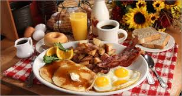

McCabane
PRIX
TARIFS
PRIX
SPÉCIAUX DÉBUT DE SAISON
ADULTES
19.13
Enfants (4 à 12 ans)
8.05$
PRIX REGULIER
Adultes (13 ans et plus)
23.48$
Enfants (4 à 12 ans)
13.05$
Enfants (0 à 3 ans)
Gratuit
*** Taxes et pourboire en sus ***
10 % de rabais applicable pour les groupes de 7 personnes et plus (une seule facture)
Des recettes de grand-maman au goût d’aujourd’hui, cuisinées sous vos yeux! Venez revivre la tradition des cabanes à sucre d’autrefois en savourant un copieux repas des sucres raffiné. Promenez-vous dans les sentiers de l’érablière avec chaudières et chalumeaux ou baladez-vous en traîneau tiré par nos chevaux de race belge. Venez passer, en groupe ou en famille, des moments inoubliables à la cabane à sucre «McCabane».
Activités à la cabane à sucre
**Salle à Manger
Recettes du temps des sucres du bon vieux temps dont la préparation et la cuisson sont faites à notre cabane à sucre.
**Menu McCabane
Nous vous invite à déguster un repas aux saveurs d’autrefois et à redécouvrir le plaisir de la tradition. Du sirop d'érable est servi avec tous nos plats.
**Le Village des enfants.
Les enfants ne sont pas oubliés chez-nous. Tout ce qu'il faut pour faire de la fête d'anniversaire de votre enfant un moment qu'il n'oubliera jamais.
**La tire d'érable.
Vient de la sève des arbres. La sève à un goût peu sucré mais lorsqu'on la fait bouillir on obtient de la tire voilà l'utilité de la salle d'évaporation.
**Les promenades en cheval.
Une marche dans les sentiers boisés vous permettra de croiser sur votre chemin la cabane d'antan et, bien sûr, l'eau d'érable en chaudières.
**Animaux de la ferme.
Visite de la ferme. Plusieurs animaux de la ferme sont sur place; poneys, poules, chèvre et plus encore...
**Boutique "La Petite Cabane".
La Petite Cabane à Sucre déploie une gamme infinie de produits d’érable, offre la dégustation de ceux-ci en tout temps..!
**Les Glaces du Château.
Venez vous rafraîchir et déguster une glace dans l’hôtel le plus photographié du monde ou couronner le tout de notre fameux sundae au beurre d’érable!